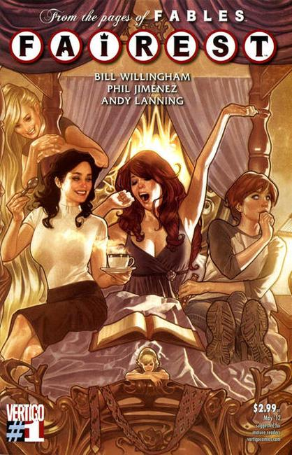
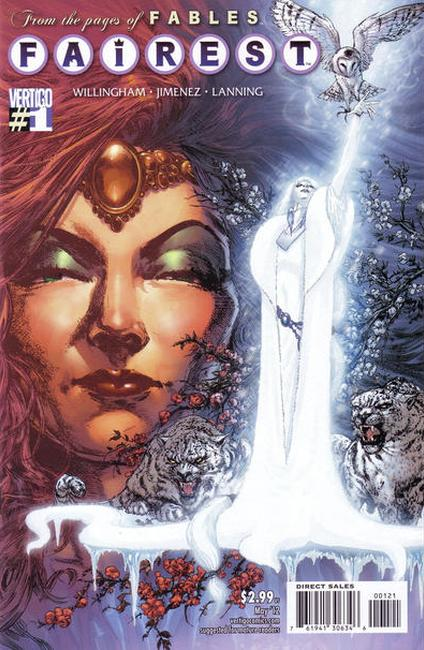

Fairest


Creator: Bill Willingham
Series: (#1-33), 2012 to 2015
Publisher: Vertigo
Fairest, a spin-off of Fables, is a monthly comic series created by Bill Willingham, published by DC's Vertigo. Fairest details the adventures and stories of Fabletown's female citizens and heroines. Willingham has stated that Fairest will comprise a lengthy six-issue story arc followed by a single, standalone issue.
Story arcs:
- Wide Awake (issues 1 to 6): Follows the misadventures of Briar Rose and the Snow Queen after the events of Fables #107, in which Briar was stolen away by the goblin army.
- Lamia (issue 7): Beauty and Beast star in their own mid-century modern detective story set in the smoky clubs and dive bars of 1940s Los Angeles.
- The Hidden Kingdom (issues 8 to 13 ): A prequel to the Fables story arc Legends in Exile. Rapunzel must travel from Fabletown to Tokyo and resolve a mystery from her troubled past.
- Aldered States (issue 14): Princess Alder tells her tales of woe to Reynard the Fox.
- The Return of the Maharaja (issue 15 to 20): When Nalayani's village is attacked, she is sent on a quest that will transform all of Fables forever.
- Fairest in All the Land (graphic novel): Someone is killing the women of Fabletown, and Cinderella has only seven days to discover the identity of the murderer.
- Of Men and Mice (issue 21 to 26): After an assassination attempt on Snow White, Cinderella is called back into service to unravel an age-old conspiracy that dates back to that fateful midnight ball.
- Clamour for Glamour (issue 27 to 32): Refugees from Fabletown have returned to New York's Castle Dark, and Reynard, now able to shapeshift from fox to man, travels the mundane world to regale the animals with tales of his exploits.
Issues: